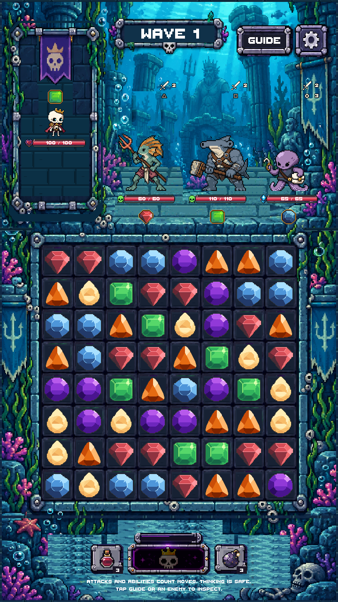
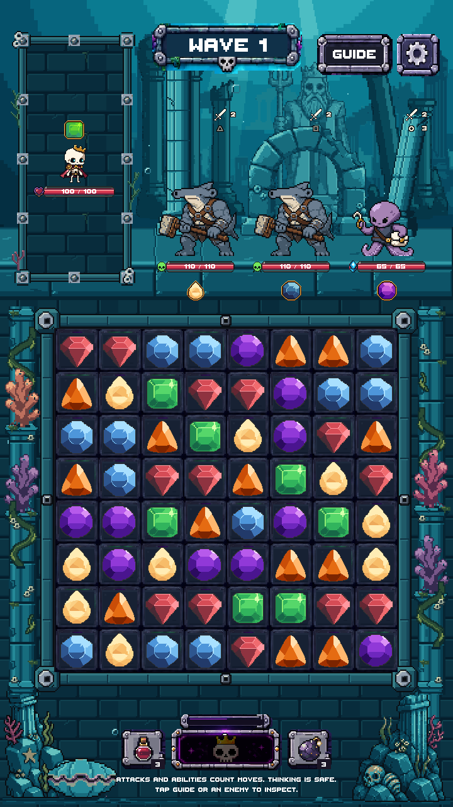
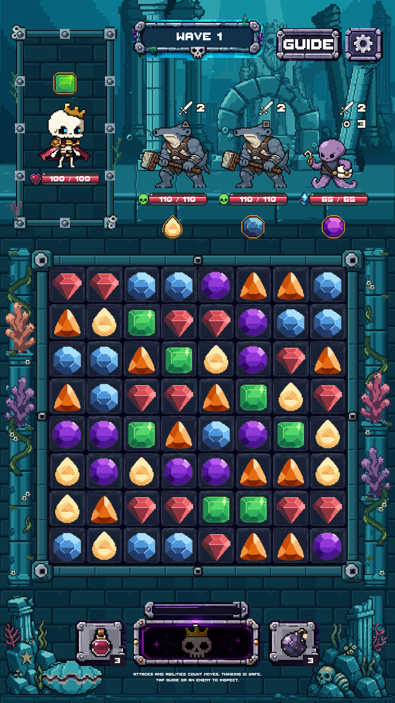
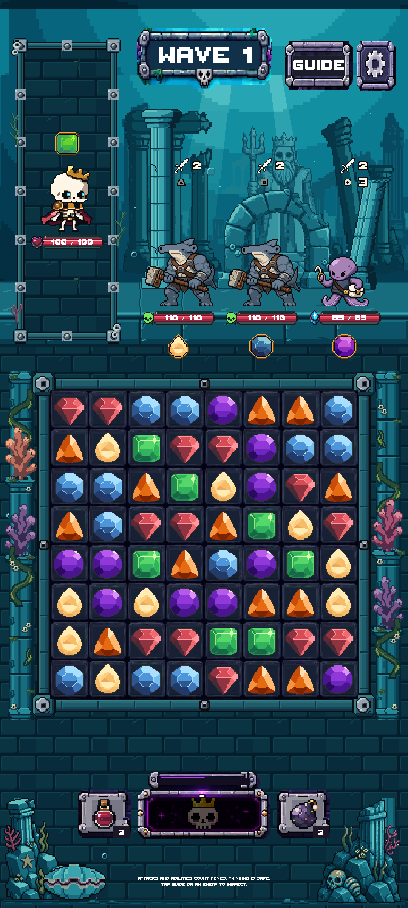
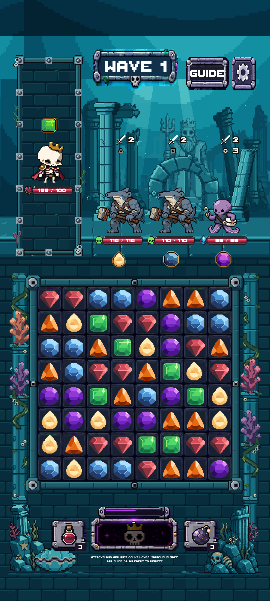
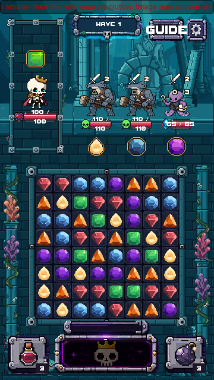
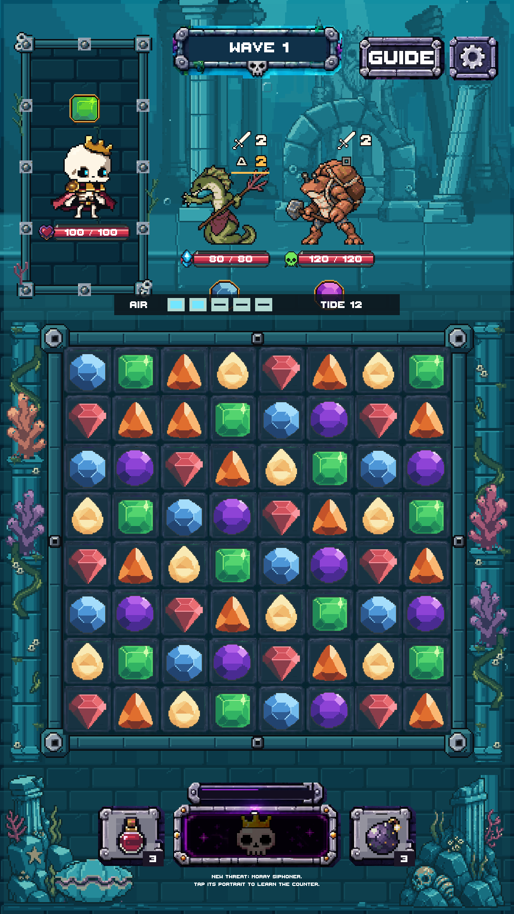

Approved modular art connected to production. Rattlebones, live enemies, gems, health bars and controls use the existing game systems. No generation spending. Verification report







25 layout cases and 75 source-floor measurements passed. Android build succeeded; physical-device acceptance remains untested. Two legacy test failures reproduced identically without the new art and are documented, not hidden.